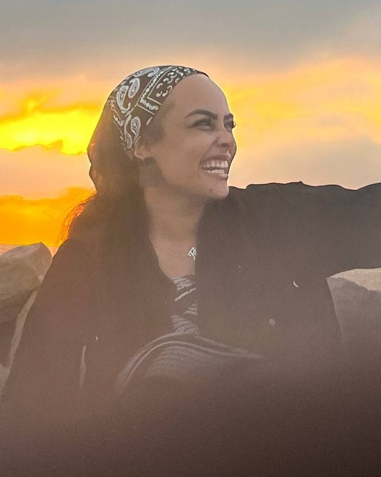
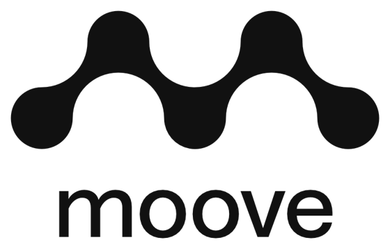
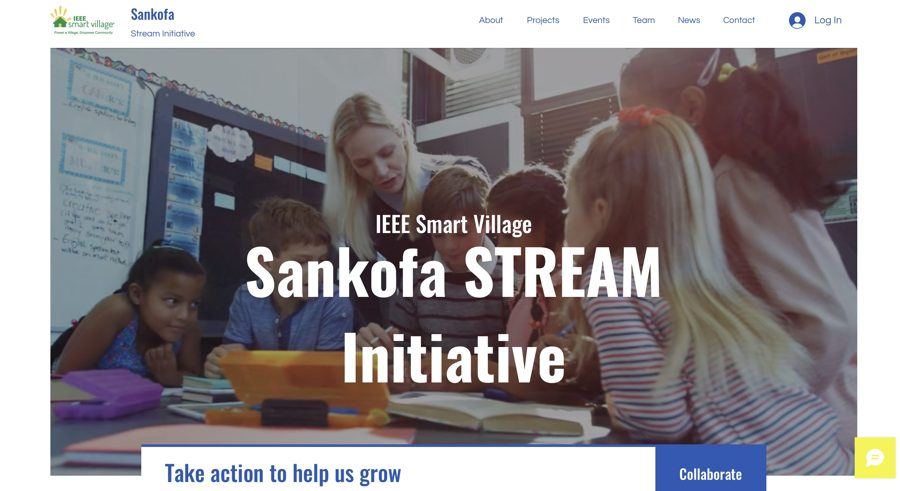
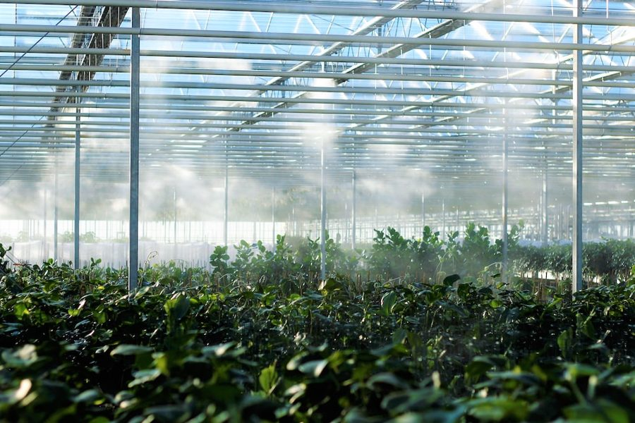
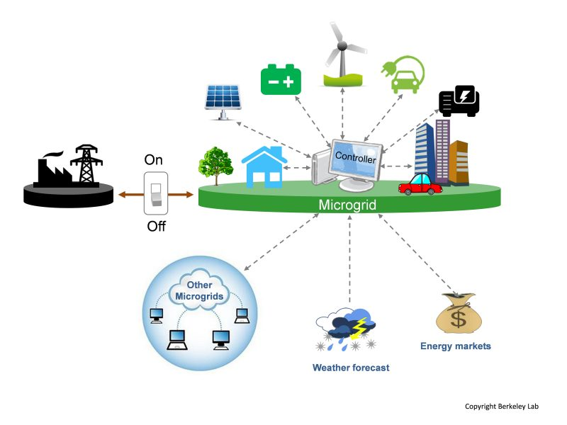

Participatory clinical evaluation
Clinicians worldwide rate LLM answers to realistic cases on MOOVE, blind to the model. I turn those judgements into rankings and consensus.
Majid Elhassan
scrollPhD Student · LiGHT Lab, EPFL
I'm Fay (فيء) Majid Elhassan, a PhD student in Mary-Anne Hartley's LiGHT lab at EPFL. I use participatory design to bring clinicians into AI alignment and safety, with evaluation as part of the same loop: the expert judgements that test a model also show us how to align it. I lead research on MOOVE.

Research
Clinicians worldwide rate LLM answers to realistic cases on MOOVE, blind to the model. I turn those judgements into rankings and consensus.
The answer clinicians prefer isn't always the safest. I study where the two diverge and what that means for aligning medical models.
Inspectable Bayesian reasoning, fully auditable open clinical LLMs, and watermarks embedded in model weights.
Previously led Antibiogo research with MSF. Earlier work: deep RL for microgrids in rural Sudan, greenhouse control and weather forecasting.
NeurIPS 2026 · Main Track
Conference on Neural Information Processing Systems (NeurIPS) 2026
Spotlight · Top 5%
ICBINB Workshop, ICLR 2026 · Rio de Janeiro, Brazil
GenAI4Health Workshop, NeurIPS 2026
medRxiv preprint
IEEE Journal of Selected Topics in Applied Earth Observations and Remote Sensing
1st Workshop on GenAI Watermarking, ICLR 2025
ICCCEEE 2020 · IEEE
ICCCEEE 2020 · IEEE
ICCCEEE 2020 · IEEE
Projects

Research lead · LiGHT, EPFL · 2025–
A participatory, clinician-in-the-loop platform for evaluating and aligning medical LLMs.
Visit jointhemoove.org →Past research lead · with Médecins Sans Frontières · 2025
AI that reads antibiotic susceptibility tests in low-resource labs. I led the research in 2025.

Education · IEEE Smart Village · 2024–
Co-founded: culturally rooted STEM learning for children in underserved communities.
Visit site →Self-supervised learning · Climate · 2023–24
Contrastive self-supervised fusion of weather data with S4 sequence models.
View code →
Reinforcement learning · Agriculture · 2023
PPO, A2C and SAC agents controlling a simulated tomato greenhouse.
View code →Deep RL · Robotics · JAX · 2023
From-scratch JAX implementations for PyBullet robotics tasks.
View code →LLMs · NLP · 2023
A PostgreSQL LangChain chatbot and a hybrid recommender for AI coding assistants.
View code →
Deep RL · Energy · 2018–20
Deep RL agents trading energy between off-grid villages in North Kordofan, Sudan. Became three IEEE papers.
View code →Community & talks
Helping build the communities that made my own path possible.
TEDx University of Khartoum · 2022
How social structures silence women's voices in Sudan and beyond, and what that costs.
Watch on YouTube →Honours
Journey
From control systems in Khartoum to clinical AI in Lausanne. Scroll to sail downstream.
Al-Mogran, KhartoumWhere the Blue and White Nile meet
Control systems, and my first RL papers on microgrids.
Forecasting, analytics and procurement automation.
LLM chatbots and AI pipelines.
Supported by Google and Meta.
LLM watermarking with Jonas Geiping and Antonio Orvieto.
Antibiogo research with MSF.
Research lead for MOOVE.
…and the river keeps flowing.
Certifications PMP (2021) · SAP Analytics Cloud (Planning) · SAP Analytics Cloud · SAP BW/4HANA · Languages English · Arabic · French
I'm always happy to talk about clinical AI evaluation, research collaborations, mentoring, or building ML communities in Africa and around the world.